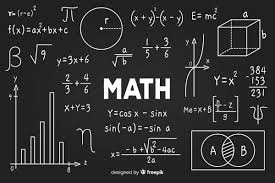

WebDev Mario Joseph Ch
Program
BMI
Calculator
Knowledge
Apa itu RUP?
ERP
Keluar
☰
Web Development Indobot Academy-Mario Joseph Ch
Web ini berfokus pada pembuatan aplikasi pemograman dan pengetahuan di bidang Computer Science. Semoga anda menyukainya!
